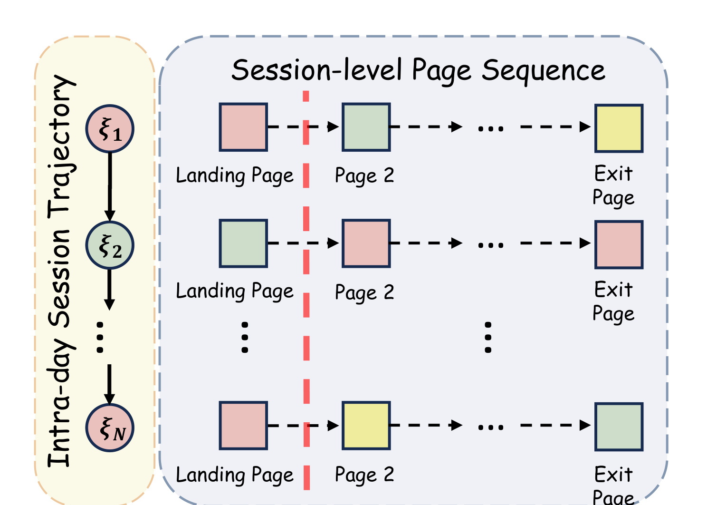
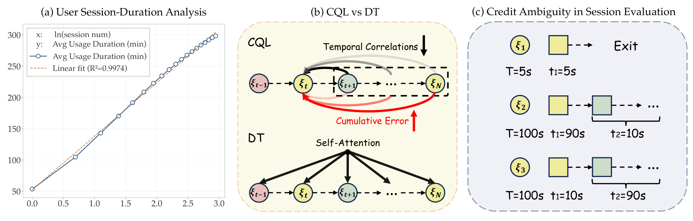
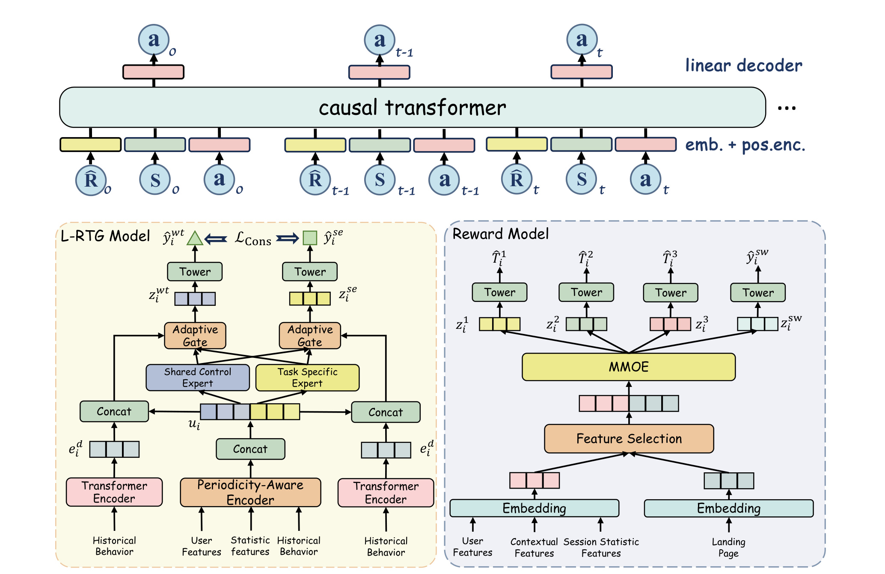
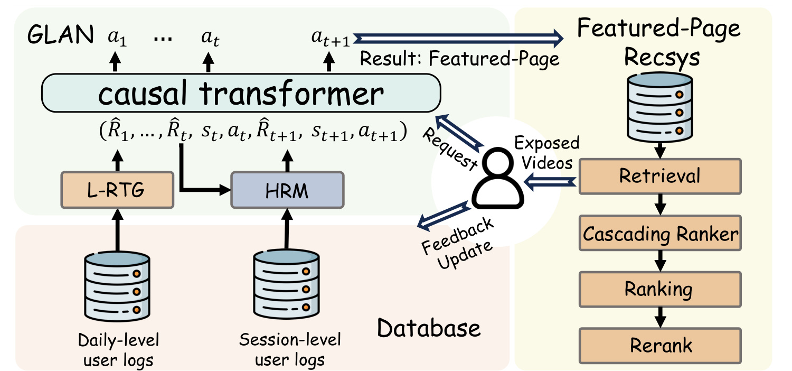
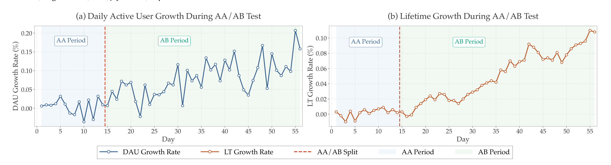
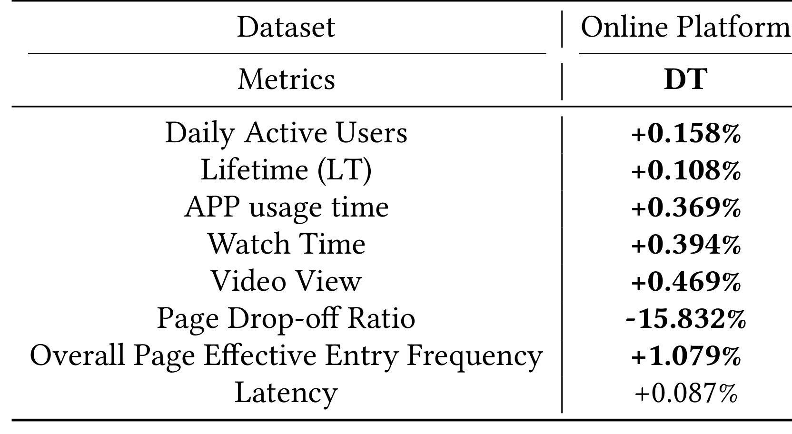
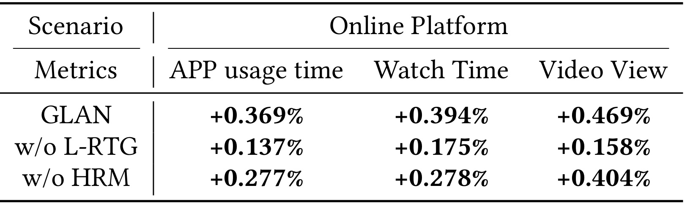
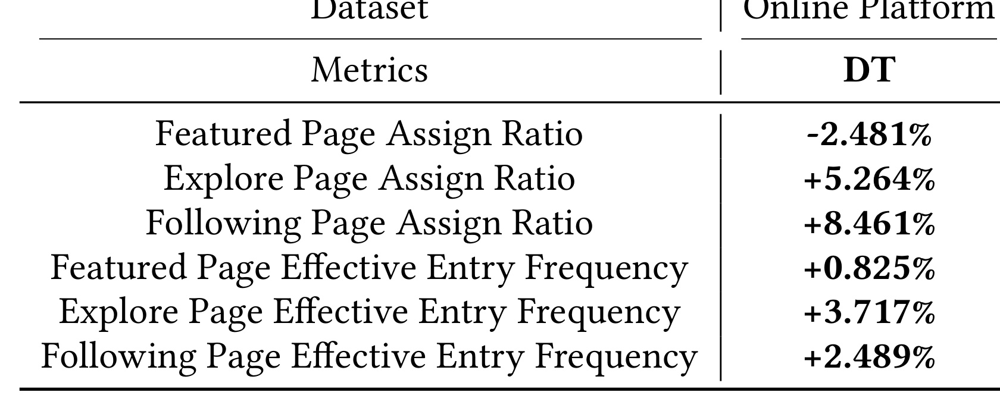

From Bootstrapping to Sequence Modeling: A Unified Generative Framework for Personalized Landing-Page Modeling 是一篇 KDD 2026 论文，论文入口为 arXiv:2606.27865。作者包括 Fan Li、Chang Meng、Jiaqi Fu、Shuchang Liu、Tianke Zhang、Xueliang Wang、Xiaoqiang Feng、Yongqi Liu、Kaiqiao Zhan；一作 Fan Li 署名 Duke University，脚注说明工作在 Kuaishou Technology 完成，其余主要作者来自快手。论文讨论的不是常规短视频排序，而是 Personalized Landing-Page Modeling，也就是用户打开 App 时先把用户带到哪个功能页或频道页。它延续快手之前的 KLAN，但把原来的 CQL 强化学习路线改成基于 Decision Transformer 的生成式序列建模框架 GLAN，并用 L-RTG 与 HRM 分别处理日级全局目标和会话级局部反馈。
现有基于 CQL 的个性化落地页方法依赖 Markov 假设，难以保留真实用户一天内多次进站之间的非 Markov 时序依赖；同时，TD bootstrapping 在延迟奖励和长周期信用分配下会积累误差，尤其当用户每天多次进入 App 时，上午的落地页动作可能影响傍晚回访，却很难由一步价值更新稳定追责。GLAN 要解决的核心矛盾是：如何在工业约束下同时给一天内所有落地页决策提供全局目标，又为每次 session 的页面选择提供足够细的局部监督。
1. 背景和问题
个性化落地页建模容易被误解成一个很小的入口排序问题：用户打开 App，系统在几个候选页里选一个，例如 Featured Page、Explore Page、Following Page 或其他功能页。论文真正强调的是，这个选择发生在用户进入平台的第一刻，会塑造用户对本次访问的起点，并影响后续页面跳转、观看、停留、回访和留存。对于短视频平台，用户一天内可能多次打开 App，每次进入时的目的并不相同：早上可能快速刷推荐，午间可能看关注创作者更新，晚上可能浏览直播或电商内容。如果系统只看最近一次行为或静态规则，就会把一天内连续发生的 session 当成彼此独立的曝光，无法理解“某一次入口是否帮助了后续消费”。

Figure 1 给出了 PLPM 的基本交互单元。每个 session 由平台指定的 landing page 开始，红线左侧是系统动作，红线右侧才是用户主动导航后的页面序列。这个分界非常重要：平台真正可控的是每次进站的第一个页面，而不是后续所有页面；但评估这个动作时，又不能只看第一个页面停留了几秒，因为用户可能从落地页跳到第二页、第三页，最后在其他页面完成消费。论文把同一用户一天内的多个 session 组织为 intra-day trajectory，这使任务从“单步选择页面”变成“根据一天内历史和剩余目标，连续产生多个页面选择”。如果只把每个 session 切开训练，模型就会错过上午、下午、晚上行为之间的依赖；如果只把总时长归给入口动作，又会把后续页面补偿消费错误地当成落地页成功。
快手此前提出的 KLAN 已经把 PLPM 建成强化学习问题，并用 Conservative Q-Learning 处理离线策略学习。KLAN 的价值在于让落地页选择不再是简单规则，例如恢复上次退出页或选历史访问最多的页，而是试图最大化长期用户满意度。不过这篇论文认为 CQL 路线有两个结构性问题。第一，CQL 仍然以 Markov Decision Process 为底座，必须把历史行为压缩进当前 state；无论用 RNN、Transformer 还是池化，压缩后的状态都很难严格满足 Markov 条件。第二，CQL 依赖 TD learning 和 bootstrapping，一步估计要递推到后续价值，延迟奖励越长、轨迹越长，误差越容易沿时间传播。PLPM 恰好是长周期和延迟反馈都很强的场景：一次 landing page 可能让用户当场离开，也可能不增加当前 session 时长，却增加晚些时候再次进站的概率。

Figure 2 把论文的问题拆成三块。左侧显示 daily app usage time 与 session frequency 存在接近对数线性的关系，这解释了为什么 L-RTG 不只预测日使用时长，还要约束 session frequency 和二者结构关系。中间比较 CQL 和 Decision Transformer：CQL 按时间步 bootstrap，局部估计会积累误差；DT 用 self-attention 在轨迹上做条件序列建模，用 Return-to-Go 作为条件，避免把价值函数递推作为唯一学习信号。右侧是 session reward 的信用歧义：两个总时长都是 100 秒的 session，一个可能 90 秒都花在 landing page 上，说明入口页对齐；另一个可能 10 秒后就离开 landing page，后续 90 秒来自其他页面补偿。若 reward 只用总时长，两个动作质量会被打成同一分数。
因此 GLAN 的核心不是“把 CQL 换成 Transformer”这么简单。Decision Transformer 需要在推理时给定目标 Return-to-Go，但未来消费在当天开始时不可见；如果给低活跃用户一个过高目标，模型会进入训练分布外状态，产生过度激进的页面选择；如果给高价值用户一个保守目标，又会压制模型的探索和收益。另一方面，DT 还需要每次 session 后更新剩余 RTG，这就要求 reward model 能把本次页面选择的贡献估得更准，而不能被后续页面消费掩盖。论文提出的 L-RTG 和 HRM 正好对应这两个缺口：前者估计日级目标，给一天内所有动作一个全局方向；后者分解 session 反馈，给每次落地页动作一个局部、可更新的奖励。
这篇论文在推荐算法里的位置比较特殊。它不是召回、粗排、精排里的某个模块，也不是传统页面内推荐模型，而是入口导航策略。入口导航的动作空间很小，论文中的可选页面包括 Following、Explore、Featured 等，但每个动作的连锁影响很大，因为页面本身连接到不同的下游推荐服务、内容生态和交互模式。动作空间小并不意味着问题简单，反而要求模型区分“应该把用户带到哪个世界里”。GLAN 的工程价值就在于把这个入口决策纳入可序列化、可反馈闭环、可线上 A/B 验证的统一框架，而不是继续依赖规则、局部 Q 值或粗粒度时长。
2. 方法
2.1 PLPM 轨迹表示：从单步 Q 值改成日内序列条件生成
符号解释：$\xi_t$ 表示用户一天内第 $t$ 次进入 App 后形成的 session，$p_{t,1}$ 是平台指定的 landing page，$p_{t,k}$ 是用户后续主动访问的页面，$M_t$ 是本次 session 访问的页面总数。这个公式的含义是，系统动作只发生在 $p_{t,1}$，但结果要从整条页面序列里观察。
符号解释：$\mathcal{T}$ 表示一天内按时间排序的 session 轨迹，$N$ 是当天进站次数。GLAN 用这条轨迹作为序列建模对象，因此每次动作都可以看到当天此前的状态、动作和剩余目标，而不是只依赖当前压缩 state。论文把 action 定义为入口页选择，reward 定义为 session-level value estimate，RTG 定义为未来奖励总量：
符号解释：$\hat R_t$ 是第 $t$ 步剩余 Return-to-Go，$\hat r_j$ 是 HRM 对第 $j$ 个 session 的奖励估计，$s_t$ 是用户进站时状态，$a_t$ 是本次 landing page action。这个表示把 PLPM 转成 Decision Transformer 可以处理的自回归序列：模型根据历史 triplet 和当前剩余目标生成下一次页面选择。这里的关键变化是监督学习式的条件生成取代了 bootstrapping 式价值递推，模型不再必须学习一个局部 Q 函数来递推所有未来价值。
2.2 L-RTG：把每日目标建成带约束的 Return-to-Go 初始化
Decision Transformer 在离线训练时可以看到轨迹后验 RTG，但线上一天开始时看不到未来，因此需要一个 prior target RTG。L-RTG 的任务就是根据用户跨日历史预测当天的预期 app usage time，并把它作为 GLAN 的初始 $\hat R_1$。论文认为用户行为同时有周周期和随机趋势，所以 L-RTG 分成两个分支：periodicity-aware feature representation 捕获稳定的 weekly cyclic patterns，sequential dynamics modeling 捕获近期变化和平台策略带来的波动。周期分支先构造上下文 embedding，再对历史行为序列做带周期偏置的注意力：
符号解释：$e_{x_i}$ 是用户特征表示，$e_{t_i}$ 是统计特征表示，$q_i$ 来自当前上下文，$K_i$ 与 $V_i$ 来自历史行为序列，$d_k$ 是 key 维度，$b_{period}$ 是周期偏置。$B_{week}$ 学习一周七天的周期效应，$B_{dist}$ 学习不同时间距离的衰减或分桶效应，$\Delta t$ 是当前上下文和历史步之间的距离。这个公式组解释了 L-RTG 为什么不只做普通 Transformer：它显式把“周末与工作日不同”“最近行为更细、久远行为更粗”的业务先验放进注意力。
符号解释：$H_i$ 是历史行为 latent representation，$P$ 是绝对位置编码，$H_i^d$ 是时序动态隐藏状态，$e_i^d$ 汇总了用户兴趣演化和随机波动。随后，L-RTG 用专家和 task-specific gate 把周期表示与动态表示融合，用不同 tower 分别预测 app usage time 和 session frequency：
符号解释：$u_i$ 是周期感知用户表示，$e_i^d$ 是动态趋势表示，$d_i^m$ 是第 $m$ 个专家表示，$g_i^k(m)$ 是任务 $k$ 对该专家的权重，$wt$ 表示 app usage time，$se$ 表示 session frequency。使用 $softplus$ 是为了保证输出非负。L-RTG 的设计重点不是多预测一个 session 数，而是用 session 数约束 usage time 目标，防止 RTG 初始化脱离真实行为结构。
符号解释：$\Theta$ 是 L-RTG 模型参数，$\bar L_{wt}$ 是 usage time 的 batch 平均损失，$\bar L_{se}$ 是 session frequency 损失，$\bar L_{rel}$ 是 usage time 与 session frequency 之间关系的一致性损失，$a,b$ 来自线上统计关系，$\lambda_{se},\lambda_{rel}$ 是拉格朗日乘子。这个约束形式直接对应 GLAN 名称里的 Lagrangian-constrained Return-to-Go：它不是单纯拟合一个日时长数值，而是在“日时长要准、进站次数不能离谱、两者关系要符合线上统计”之间做可调平衡。
2.3 HRM：把 session 反馈拆成页面时长和落地页流失风险
HRM 处理的是另一端的问题：每次 session 结束后，GLAN 要用一个 reward 更新剩余 RTG，但朴素总时长会混淆落地页质量和后续页面补偿。论文把每个 session instance 写成用户特征、上下文特征、session 特征、被分配 landing page 和观测响应的组合，其中响应包含三类页面时长以及一个 landing-page drop-off 二值信号。HRM 先用 landing page embedding 引导特征选择：
符号解释：$e_{x_i}$ 是用户特征 embedding，$e_{c_i}$ 是上下文特征 embedding，$e_{v_i}$ 是 session 特征 embedding，$e_{k_i}$ 是 landing page embedding，$FS$ 是 page-specific feature selection，$f_i$ 是进入 MMoE 的融合特征。这个式子体现了 HRM 的页面特异性：不同页面对同一用户特征的解释不同，Featured Page、Store Page、Following Page 的消费意图并不共享同一个选择函数。
符号解释：$z_1,z_2,z_3$ 分别服务三个页面类型的时长预测，$z_{sw}$ 服务切换或快速离开风险，$\hat T_{ij}$ 是第 $j$ 类页面的预测消费时长，$\hat y_i^{sw}$ 是落地页被快速放弃的概率。训练目标由细粒度时长回归和 drop-off focal BCE 组成：
符号解释：$T_{ij}$ 是第 $j$ 类页面的真实消费时长，$L_{sw}$ 是针对 drop-off 的 focal binary cross-entropy，$\lambda$ 平衡时长回归和流失风险，$\hat r_i$ 是最终给 GLAN 使用的 session-level reward。乘上 $(1-\hat y_i^{sw})$ 的含义很清楚：如果用户很可能快速放弃 landing page，那么即使后续页面贡献了消费时长，本次入口动作也要被折价。HRM 的核心贡献是把“用户最后消费了多久”改写为“入口页是否对齐 + 后续页面消费如何分布”的局部监督。

Figure 3 是 GLAN 的主架构图。上方 causal transformer 消费 RTG、state、action 序列，并输出下一步 action；左下 L-RTG Model 由历史行为、用户特征、统计特征进入周期编码器和 Transformer Encoder，再通过 adaptive gate、shared control expert 与 task specific expert 输出 usage time 和 session frequency，并用约束损失组织训练；右下 Reward Model 则从用户、上下文、session 统计和 landing page embedding 出发，经 feature selection、MMoE 与四个 tower 输出三类页面时长和 switch 风险。图中 L-RTG 与 HRM 并不是两个离线辅助模型，而是嵌入 DT 闭环的两端：前者在一天开始时设定目标，后者在每次 session 完成后把结果反馈给剩余目标。这样看，GLAN 的“unified global-local perspective”不是口号，而是把日级 Return-to-Go 和会话级 reward 都显式建模。
2.4 在线闭环：每日初始化、每次进站生成、会话后更新
线上推理流程由三步交替组成。第一步是每天开始时调用 L-RTG，根据用户跨日 profile 和历史行为预测个性化 initial RTG，记为 $\hat R_1$。第二步是每次用户进入 App 时，GLAN 根据当前状态、剩余 RTG 和当天历史轨迹生成 landing page action：
符号解释：$\pi_\theta$ 是 GLAN 的策略模型，$s_t$ 是当前进站状态，$\hat R_t$ 是当前剩余目标，$\tau_{<t}$ 是当天此前的 state、action、RTG 序列。第三步是 session 完成后，HRM 根据实际行为估计本次 reward，并更新剩余 RTG：
符号解释：$\hat r_t$ 是 HRM 对第 $t$ 次 session 的局部奖励估计，$\hat R_{t+1}$ 是下一次进站前剩余的日级目标。这个更新让 GLAN 可以在一天内动态调整：如果早些 session 已经贡献了较高价值，后续决策的剩余目标会下降；如果目标仍未满足，后续 action 会在更高 RTG 条件下生成。与 CQL 的差别在于，GLAN 不需要通过 Q 值递推去间接估计长期收益，而是把目标和历史轨迹作为条件输入直接生成动作。

Figure 4 展示了 GLAN 接入快手线上服务的位置。用户进入 App 后，请求先到 personalized landing page service，GLAN 根据日级日志、会话级日志和历史轨迹返回一个页面，例如 Featured Page。页面指示返回后，下游对应的推荐服务才会触发 retrieval、cascading ranker、ranking 和 rerank，并把曝光视频给用户。用户行为完成后，反馈会更新到数据库，用于下一次 session 的 HRM reward 和后续训练。这个图的意义是把 GLAN 和页面内推荐系统边界分清：GLAN 不替代 Featured Page 的视频排序，它决定把用户送到哪个下游页面；下游页面继续执行自己的召回排序链路。论文声称当前线上 baseline 是按小时更新的 KLAN/CQL，而 GLAN 重建了 personalized landing page service 并进入线上 A/B，这使实验结果更接近真实业务替换，而不是离线模拟。
3. 实验结果
3.1 数据与线上实验设置
论文没有把实验重点放在离线公开 benchmark，而是以快手线上系统为主要验证场景。Daily-level data 来自快手短视频平台两个月匿名交互日志，用于训练 L-RTG。每个样本包含用户画像，例如年龄、地域、活跃度；还包含过去 7 天和 30 天的总体消费统计，例如 app usage duration 和 video view counts，以及过去 7 天和 14 天的页面级停留、页面视频播放、直播播放等指标；动态行为序列覆盖过去 30 天的 daily session frequency 和 daily app usage time。标签是下一天的总 app usage time 和 session frequency，这与 L-RTG 的目标完全一致。
Session-level data 则来自在线实时流日志，用于训练 HRM。每个样本包含完整 session-level page sequence，并标注细粒度页面消费特征，例如 watch time 和 video view counts。为了实时刻画用户状态，论文还加入当前日页面级消费统计、进站时关注作者直播数量、当天此前进站次数，以及过去 n 天的页面级历史消费行为。这样的数据设计和方法是一一对应的：L-RTG 需要跨日历史和下一天目标，HRM 需要每次 session 内页面时长、上下文和 drop-off 信号，DT 主体需要当天历史轨迹。
线上 A/B 是论文最有分量的部分。作者直接重建原 personalized landing page service，在快手平台约 5% 流量上运行约 56 天，其中包括 14 天 AA 阶段和 42 天 AB 阶段。评估指标覆盖普通消费指标、商业或内容指标、PLPM 特定指标、平台约束指标和留存指标：APP usage time、watch time、daily active users、video view、page drop-off ratio、effective page entry frequency、latency、Lifetime。论文还给出 LT 的定义：
符号解释：分子是从 $\max(T-6,T_0)$ 到 $T$ 的 DAU 求和，分母是从 $T_0$ 到 $T$ 的活跃用户总数。这个指标用于衡量留存和用户体验质量。因为 PLPM 改的是 App 入口页，DAU 和 LT 比单次 watch time 更能反映长期影响；但它们也更容易受到季节、活动和流量构成干扰，所以论文用 AA/AB 长周期曲线和最后 7 天均值同时报告。

Figure 5 展示了 56 天实验期间 DAU 和 LT 的增长曲线。AA 阶段曲线接近零附近波动，AB 阶段 DAU 增长率和 LT 增长率逐步抬升，尤其 LT 在后半段呈现较持续的上行。这个图比单个均值更有价值，因为它说明 GLAN 的收益不是某一天尖峰，也不是 AA 阶段就已经存在的随机偏移。左图 DAU 的日波动比 LT 更大，说明入口页策略仍会受节奏、用户活跃和流量结构影响；右图 LT 更平滑，说明从入口页改变到留存改善存在累积过程。图中的竖线把 AA 与 AB 分开，也让读者能检查上线前后是否有明显断点。需要注意的是，图中没有给出置信区间，曲线解释仍要结合 Table 1 的显著性说明；但从趋势看，GLAN 对留存类指标的改善不是只发生在短期新鲜感阶段，而是在 42 天 AB 窗口内保持正向。
3.2 主结果：DAU、LT、消费与流失风险同时改善

Table 1 是论文最核心的结果表。GLAN 相比线上 KLAN baseline，Daily Active Users 提升 +0.158%，Lifetime 提升 +0.108%，APP usage time 提升 +0.369%，Watch Time 提升 +0.394%，Video View 提升 +0.469%，Page Drop-off Ratio 下降 -15.832%，Overall Page Effective Entry Frequency 提升 +1.079%，Latency 只增加 +0.087%。这些数值的量级需要按工业推荐理解：DAU 或 LT 的千分级增益在数亿用户平台上已经很可观；PDR 的大幅下降则说明入口页选择更少导致用户立即离开；latency 近乎不变说明 L-RTG 每日一次、HRM session 级、DT 小动作空间的组合没有明显破坏在线效率。表中结果也支持论文的全局-局部设计：如果只有消费时长提升而 PDR 变差，可能是把用户导向高消费但不匹配的页；如果 PDR 下降但 DAU/LT 没有提升，说明入口体验更平滑但长期目标不足。GLAN 在这些指标上同时正向，才使论文的“global guidance + local supervision”更可信。
不过 Table 1 也有边界。论文没有公开绝对基数、业务分层或不同用户群体的异质效果，因此不能判断收益主要来自高活跃用户、低活跃用户还是某类页面重分配。表中 Latency +0.087% 是平均结果，但没有列 P95/P99 延迟；对于入口服务，尾延迟同样重要。即便如此，Table 1 仍然是强线上证据，因为它不是离线 replay，也不是小样本 user study，而是在真实快手 personalized landing page service 上跑了 5% 流量和 56 天周期。
3.3 消融：L-RTG 比 HRM 更影响全局消费，但二者都不可省

Table 2 对比完整 GLAN、去掉 L-RTG、去掉 HRM 三个版本。完整 GLAN 在 APP usage time、Watch Time、Video View 上分别是 +0.369%、+0.394%、+0.469%；w/o L-RTG 降到 +0.137%、+0.175%、+0.158%；w/o HRM 降到 +0.277%、+0.278%、+0.404%。这个结果说明两个模块都贡献收益，但 L-RTG 的缺失造成最大退化，尤其 Video View 从 +0.469% 降到 +0.158%。论文的解释是，若 initial RTG 只用过去 7 天历史平均值，无法捕获跨日 engagement volatility，也无法用 usage time 与 session frequency 的结构关系约束目标，因此 DT 虽然仍能看 intra-day trajectory，却缺少合适的每日目标。
HRM 的消融同样重要。w/o HRM 用总 session duration 作为 naive reward，仍然优于 KLAN baseline，但低于完整 GLAN。这说明从 CQL 切到 DT 本身确实有收益，然而局部 reward 粗糙会限制上限。尤其 Watch Time 从 +0.394% 降到 +0.278%，说明只看总时长会把“落地页失败但后续页面补偿”的 session 误认为好动作，导致策略仍然学习到一部分错误归因。这个消融表也把 GLAN 和普通 Decision Transformer 区分开：论文不是简单套用 DT，而是围绕 PLPM 的推理初始化和奖励归因分别做了 L-RTG、HRM 两个补丁。
3.4 页面级分析：缓解 Featured Page 吸流，并保持有效进站增长

Table 3 展示 GLAN 对页面分配结构的影响。Featured Page Assign Ratio 下降 -2.481%，Explore Page 上升 +5.264%，Following Page 上升 +8.461%；同时 Featured、Explore、Following 的 Effective Entry Frequency 分别提升 +0.825%、+3.717%、+2.489%。论文认为旧 baseline 由于 Featured Page 通常有更高消费时长，容易形成 winner-takes-all：模型不断把更多用户送到 Featured，Featured 获得更多反馈，又进一步强化其优势。GLAN 通过 DT 的全局轨迹感知和 HRM 的页面特异局部反馈，重新识别 Explore 与 Following 对某些用户的价值。更关键的是，有效进站频次在三个页面都提升，说明分流不是为了多样化而多样化，而是把用户送到更匹配的页面后，真实有效访问也增加。
这个结果也解释了为什么 PLPM 不能只优化总 watch time。假设 Featured Page 的平均时长最高，贪心模型会不断选择 Featured，但用户未必每次进站都想刷推荐流；Following 或 Explore 对某些上下文更合适，甚至能提高后续回访。Table 3 的价值在于把 GLAN 的收益从总体指标拆到决策行为：它不是单纯增加全局消费，而是在页面入口层改变了流量分配，并且没有牺牲每个页面的有效进入质量。对平台策略来说，这类机制还能避免某个频道长期挤压其他频道的入口曝光。
Figure 6 来自附录，展示 Featured Page、Store Page、Following Page 的页面形态差异。Featured Page 是全屏单列沉浸式消费，交互按钮围绕点赞、评论、关注；Store Page 更像电商双列列表，强调商品、价格和交易动作；Following Page 则把关注创作者内容以双列形式呈现，兼顾内容浏览和社交关系。这个图支持 HRM 的 feature selection 设计：同样的用户活跃度、上下文和 session 统计，在不同页面下含义不同。对 Featured Page，短时离开可能说明推荐内容不匹配；对 Store Page，快速跳转也可能是商品浏览路径的一部分；对 Following Page，关注作者是否直播、用户与关注关系的强度会更重要。GLAN 需要 landing page embedding 引导特征选择，而不是用一个统一 reward head 解释所有页面。
3.5 系统效率与可复现边界
论文在附录讨论了复杂度。L-RTG 的周期注意力是 $O(Ld)$，Transformer Encoder 是 $O(L^2d)$，但 L-RTG 每个用户每天只调用一次，因此摊到每次 session 的成本较低。HRM 的 feature selection 是 $O(Fd)$，MMoE 和四个 tower 是 $O(M'd^2)$，与轨迹长度无关。Decision Transformer 在第 $t$ 步处理 RTG、state、action triplet，复杂度随当天 session 数增长；论文指出典型日 session 数通常小于 100，动作空间只有 3，并且可以用 KV-cache 降低自回归增量成本。Table 1 中 Latency +0.087% 是这些复杂度论证的线上验证。
可复现性方面，这篇论文有明显工业论文特征。作者称 daily-level benchmark 会在论文接收后公开，但当前笔记只依据 PDF 可见内容，未核验到独立代码仓库或公开数据。线上 A/B 的指标很强，但主要数据、特征、页面集合、策略约束和用户分层都属于快手内部系统，外部很难复现实验。对于读者来说，更可迁移的不是具体数值，而是三个设计原则：入口导航应按 day-level trajectory 建模；Decision Transformer 的初始 RTG 必须由行为周期和目标关系约束；session reward 应拆开 landing page 对齐和后续页面补偿，不能只看总时长。
4. 总结
我对这篇论文的判断是：GLAN 的贡献主要在任务建模和工程闭环，而不是某个单点神经网络层。PLPM 的动作空间只有几个页面，看似比推荐排序简单，但它连接的是用户进站第一印象、后续页面消费和当天多次回访。KLAN/CQL 已经把问题从规则提升到离线强化学习，GLAN 则进一步指出 CQL 在非 Markov 轨迹和延迟奖励上会遇到结构性瓶颈。用 Decision Transformer 接管动作生成后，论文又没有忽略 DT 自身的两个难点：目标 RTG 如何初始化、局部 reward 如何可信更新。L-RTG 和 HRM 正是围绕这两个难点展开，因此方法和任务之间绑定得比较紧。
工程上最值得借鉴的是全局目标和局部反馈的拆分。很多推荐策略只在 session 内优化一个即时目标，然后把长期留存交给上层策略；GLAN 让 L-RTG 每天给出用户级目标，再让 HRM 在每次 session 后折算本次贡献，形成可递减的剩余目标。这种设计适合入口页、push、频道选择、首页 tab、广告频控等动作空间小但长期影响大的决策。若迁移到其他平台，首先要确认是否存在稳定的跨日目标和可靠的局部反馈拆解；如果没有 HRM 类信号，DT 可能仍会被粗粒度 reward 带偏。
局限也比较清楚。第一，论文主要依赖快手线上 A/B，外部无法复查样本构成、绝对基数和用户分层，收益的适用边界需要保守看待。第二，L-RTG 的结构一致性基于 app usage time 和 session frequency 的统计关系，若平台目标不是这两个量，或者二者关系在活动期、节假日、推荐策略变化后漂移，需要重新估计约束。第三，HRM 的 page-specific reward 依赖细粒度页面时长和 drop-off 标注，数据管道不完整的平台很难直接复用。第四，DT 的效果依赖离线轨迹覆盖，如果某些 landing page 在历史策略中曝光很少，模型仍可能缺少可靠的条件序列。第五，论文没有公开代码和完整 benchmark，复现者只能先复刻建模思路，不能验证所有线上细节。
后续跟进我会看三点。第一，关注论文承诺的 daily-level benchmark 是否公开，以及是否包含足够的页面类型、跨日序列和 RTG 标签；这决定外部研究能否比较 GLAN 与其他 offline RL、behavior cloning、sequence policy 方法。第二，关注 GLAN 在不同用户活跃层级上的异质收益，尤其低活跃用户是否因为过高 RTG 产生不适配页面，高活跃用户是否真正释放了更高目标。第三，关注 HRM 的 reward decomposition 是否能扩展到更多页面和更复杂目标，例如商业转化、内容生态、多目标公平或创作者侧收益。第四，若未来要在实际系统复现，应先做影子评估和小流量实验，重点监控 PDR、tail latency、页面分配漂移和长期留存，而不能只看短期 watch time。整体看，GLAN 是一篇很典型的工业推荐策略论文：方法并不追求形式复杂，而是把一个容易被规则处理的入口决策，改造成有轨迹、有目标、有局部反馈、有线上验证的生成式策略系统。